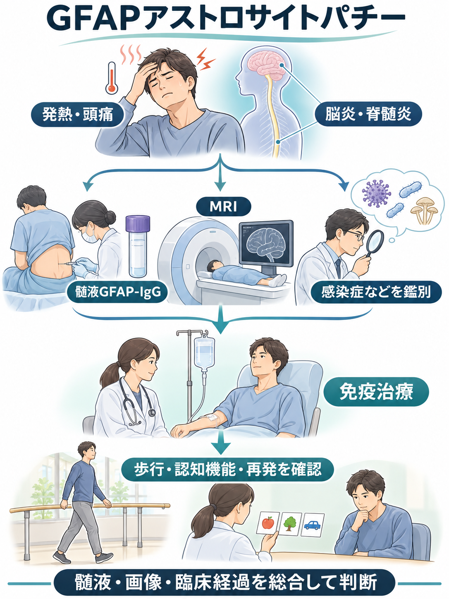
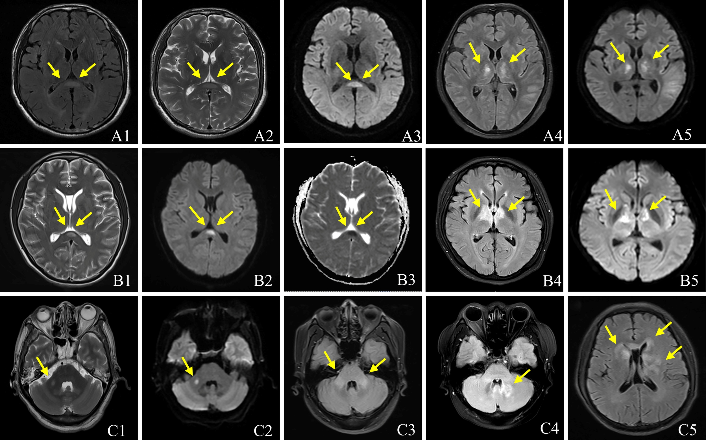
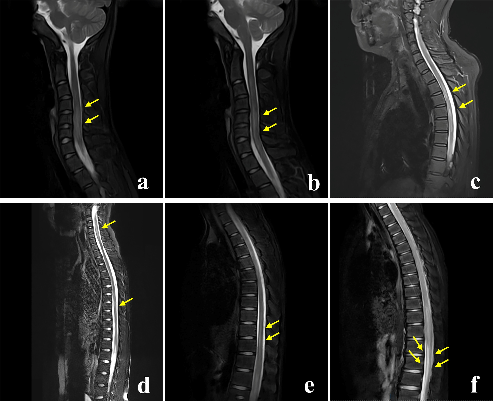
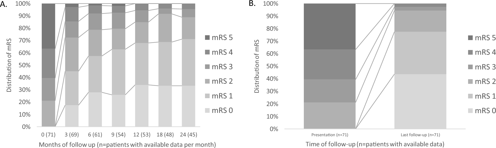
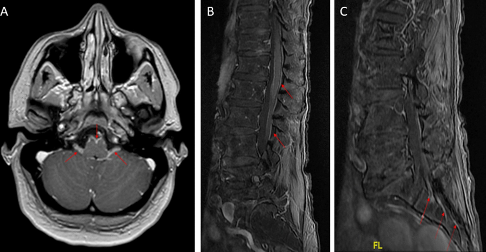
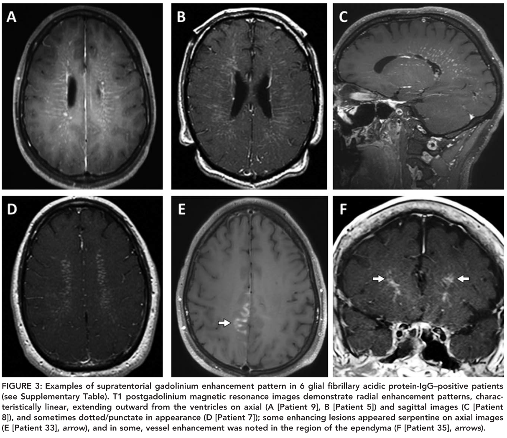
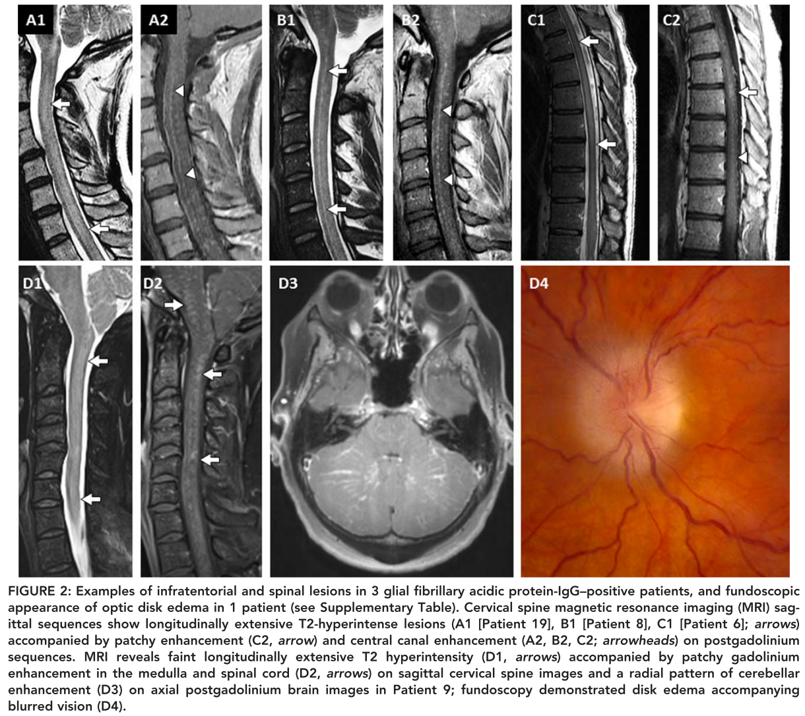

GFAPアストロサイトパチー：全体図と原著の図
画像をクリック／タップすると、元の解像度で表示できます。

画像を原寸で開く

Zhu B, Sun M, Yang T, et al. Front Immunol. 2023;14:1106490, Figure 2. 原著／CC BY 4.0。画像形式の変換のみ。
画像を原寸で開く

Zhu B, Sun M, Yang T, et al. Front Immunol. 2023;14:1106490, Figure 4. 原著／CC BY 4.0。画像形式の変換のみ。
画像を原寸で開く

Arzalluz-Luque J, Dumez P, Picard G, et al. J Neurol. 2025;272:421, Figure 2. 原著／CC BY 4.0。内容変更なし。
画像を原寸で開く

Theuriet J, Cluse F, Gravier-Dumonceau A, et al. J Neurol. 2023;270:5545–5560, Figure 3. 原著／CC BY 4.0。内容変更なし。
画像を原寸で開く
引用図：Gd造影T1強調像：脳室から白質へ延びる放射状血管周囲造影

Flanagan EP, Hinson SR, Lennon VA, et al. Ann Neurol. 2017;81:298–309. Figure 3. 原著／医學事始めの掲載ページより引用（同サイト管理者の引用許可を得ています）。原図・原著英語図説明は変更していません。13
図と解説を原寸で開く
引用図：脊髄・後頭蓋窩の病変とGd造影、視神経乳頭浮腫の原著掲載例

Flanagan EP, Hinson SR, Lennon VA, et al. Ann Neurol. 2017;81:298–309. Figure 2. 原著／医學事始めの掲載ページより引用（同サイト管理者の引用許可を得ています）。原図・原著英語図説明は変更していません。13
図と解説を原寸で開く